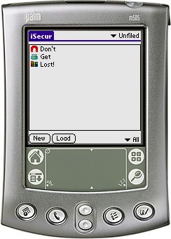

iSecur is a Personal Information Manager which lets you store secrets safely. iSecur is the successor of Secure It and provides stronger encryption (SHA256 and AES), icons, intelligent templates and more.
iSecur is released under the GNU General Public License v2 and requires Palm OS 3.5 or better to work.
You can support this project by donating any amount to my Pay Pal account.
Brazilian Portuguese - by Marcelo Silva (Note! This is a very old version of iSecur!)
I've created a small desktop companion which lets you view (not edit) the iSecur data file:
iSecur can be installed side by side with Secure It. Each application uses its own database so data in one application cannot be seen in the other. I've created a program which lets you transfer secrets and templates from Secure It to iSecur:
The following persons deserves a huge Thank You:
v1.6 (2006-12-21) AKA: "The Christmas Release" Annoying bug fixed: iSecur no longer deletes an item when exiting (yay! this one has been going on since v1.0 :-) When importing you can now set a icon for all the imported items. iSecur is now prepared for translation. iSecur is also released in Danish :-) iSecur no longer crashes if the Password Generator is brought up on a non-field object. 5 way navigation on the Show form is now corrected. v1.5 (2006-12-01) * THIS RELEASE WAS ONLY RELEASED TO TESTERS * Added keyboard - everybodys favourite! v1.4 (2006-11-28) When doing a find inside iSecur the entire secret is searched. Fixed a bug where the Quick Find on the main list would bomb if a secret was added and then immediately was deleted. Preferences item added: if you add a new secret or edit an existing secret and you change the category you now have the option to stay in the category you're coming from. Preferences item added: if you load a template you have the option to store the secret in the same category as the template. The function of the 5 way up/down can now be changed so that up/down on a focused list without any selections is page up/down. Normal GUI guidelines states that 5 way up/down should move between GUI elements much like 5 way left/right does. Fixed some 5 way navigator related bugs. When you load a template into a secret which already contains some text you can now add to the secret instead of replacing the original text. The Password Generator Icon should now come up with the right image all the time. You can now set a hint about your password. The hint can be brought up on the "Enter password" dialog. Double clicking on the "Select Icon" icon on the edit screen no longer crashes iSecur. iSecur installs itself into the "Main" category of your launcher by default (if such a category exists). Import from Memo/Export to Memo implemented. Text can now be copied from the secret to clipboard in Show mode. v1.3 (2006-10-26) Simple passwords are now expanded so that a trimmed down password won't log you in. The Password Change alarm system has been reworked. It is simpler and hopefully more stable. The password generator can now be used on the Edit and Keywords screens. Templates in Find results are highlighted. Find now works again. Keywords are now properly saved. v1.2 (2006-10-04) Enhanced navigation on OS 5 devices. Added the "Entry on list opens new" option. Added the 'password' keywords macro. Added menu items for most accessed functions. Enter on the password forms now submits the form (one entry) or moves between the fields (multiple entries). v1.1 (2006-08-07) Fixed a bug where secrets were truncated at 255 characters. They can now be up to 16K. Added a "Load" button on the main screen to create secrets from templates. v1.0 (2006-07-10) First public release.